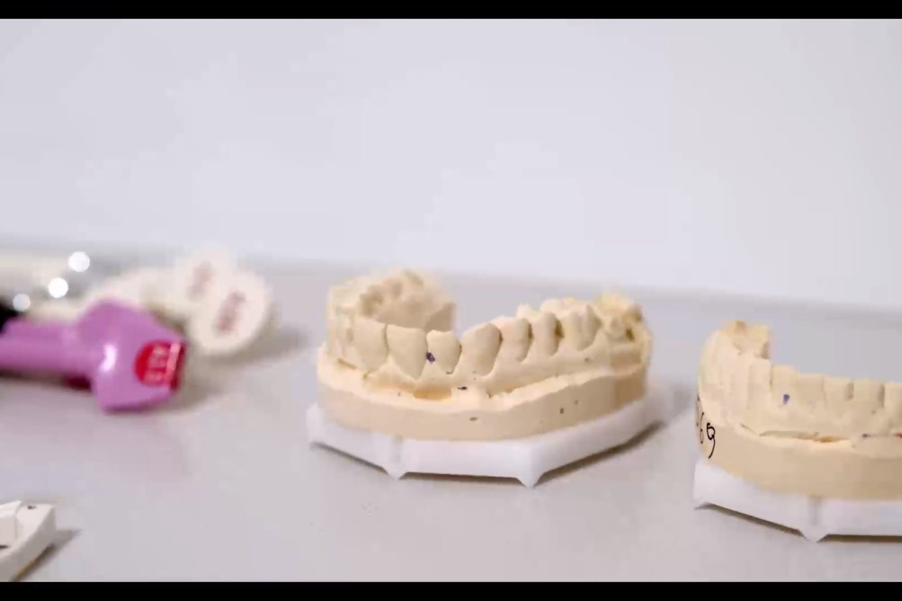
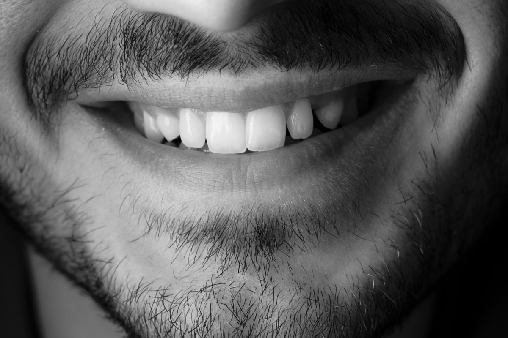
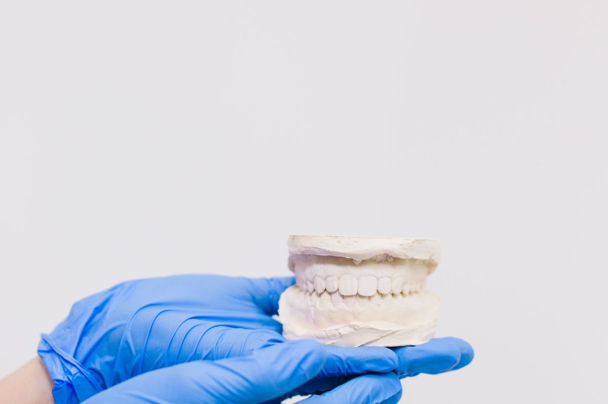
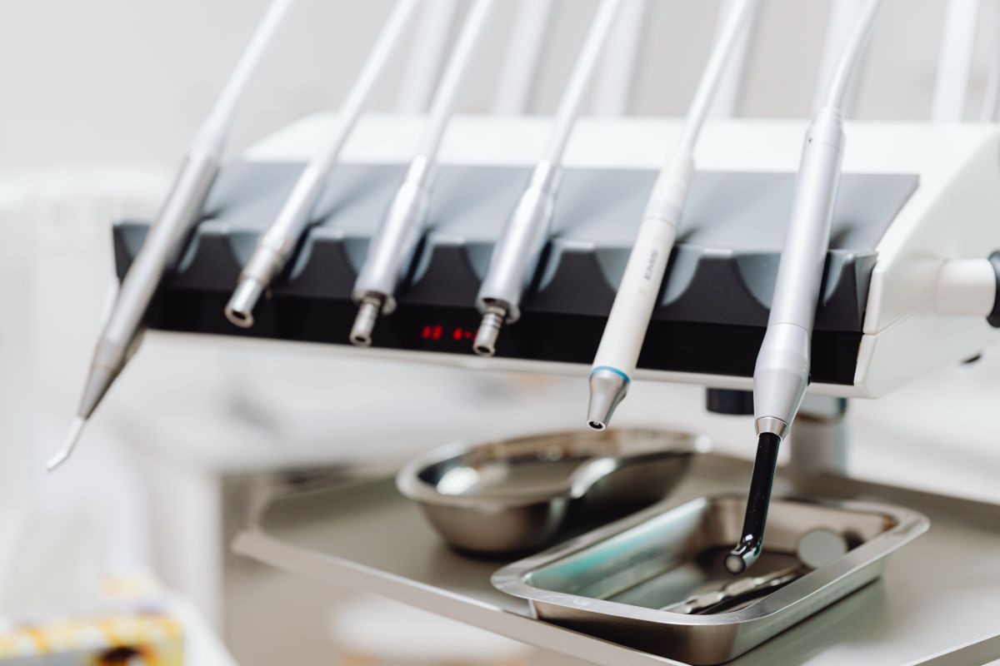
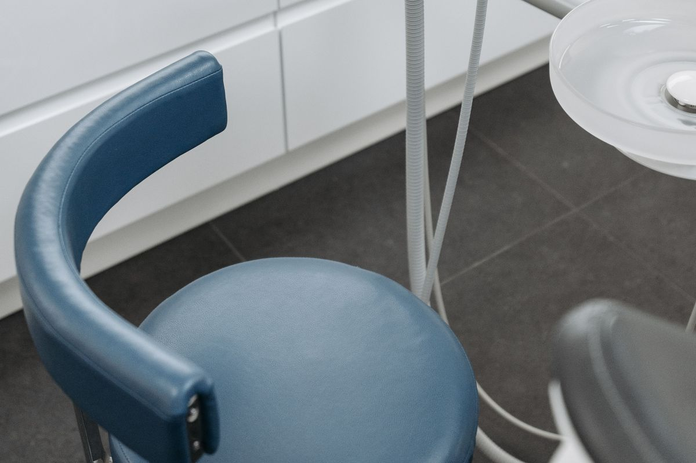
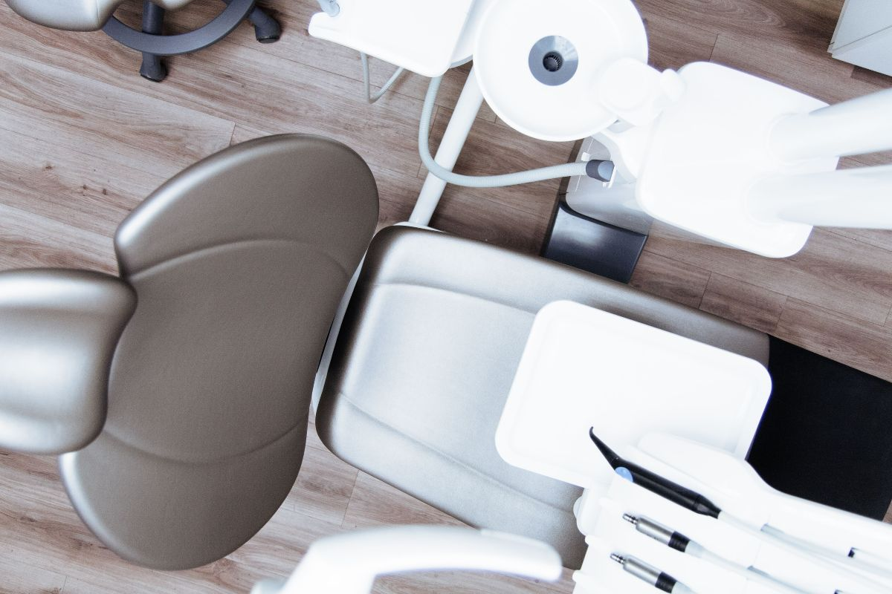
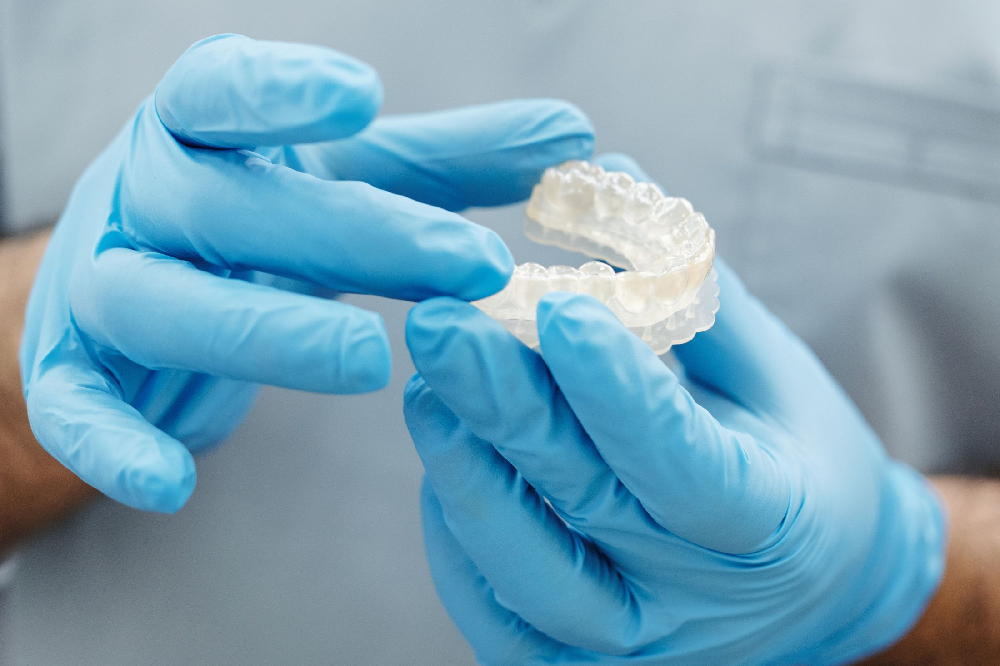
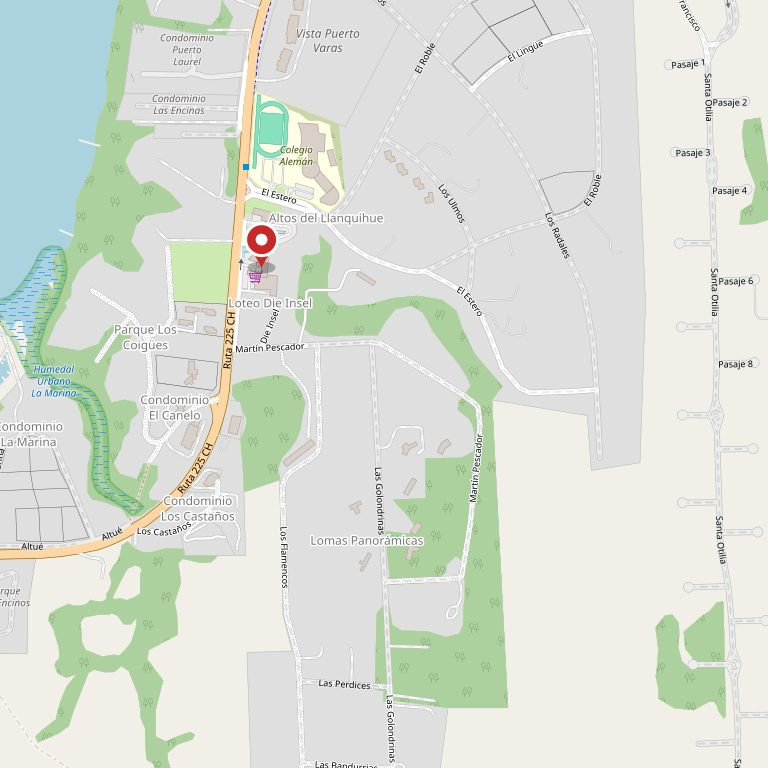

Qué es
- Un conjunto de procedimientos que buscan proporción entre los rasgos
- Se planifica mirando la cara completa, no un rasgo suelto
- Se evalúa primero: no todos los casos lo necesitan
- Tiene resultados que se mantienen un tiempo y luego se revisan
Propuesta de sitio web — preparada para Clínica del Lago, Odontología por CristalWeb
Hacen ortodoncia con alineadores y armonización facial, y al 02-09-2026 lo único suyo que aparece al buscar son dos perfiles de redes sociales: ninguna página propia. El paciente de ortodoncia compara antes de llamar, y acá no hay nada que comparar. Ésta es la página que debería estar ahí.
Centro comercial Doña Ema, local 16 · Puerto Varas
El tratamiento con alineadores no falla por la marca de la placa: falla por las horas que estuvo fuera de la boca. Acá está el tratamiento completo explicado, con ese número adelante.
La pieza que ninguna clínica de la zona publica
Cuántas placas son, cada cuánto se cambian, cuántos controles hay y qué pasa si se pierde una. Las cifras van como ejemplo hasta que la clínica las confirme; el orden de las etapas y el dato de las horas de uso son de oficio.
Los puntos son los controles en clínica.
01
Se escanea la boca y se arma el recorrido completo antes de empezar. Acá se ve, en simulación, dónde va a terminar cada diente — y recién ahí se decide si el caso es de alineadores.
1 a 2 semanas
02
Cada placa mueve un poco y se cambia cada una o dos semanas. No duelen: aprietan los primeros dos días de cada cambio, y eso es señal de que está trabajando.
10 a 14 días por placa
03
Es el número que decide el resultado. Se sacan para comer y para lavarse los dientes; el resto del día y toda la noche van puestas. Un tratamiento de placas usadas doce horas al día no es un tratamiento más lento — es uno que no termina.
22 h · dato de oficio, no ejemplo
04
Cada tres o cuatro placas se revisa en clínica que los dientes vayan donde deben. Si se atrasaron, se corrige ahí y no al final.
cada 6 a 8 semanas
05
No se salta a la siguiente. Se vuelve a la anterior y se avisa el mismo día: reponerla toma tiempo y avanzar de más puede soltar un diente.
Avisar el mismo día
06
Termina el tratamiento y empieza la contención. Los dientes vuelven si no se sujetan: esta etapa no es opcional y hay que contarla desde el principio.
permanente, con controles
Antes de hablar de placas hay que saber si el caso es de placas. Eso se ve en la evaluación, no en el presupuesto.
Armonización facial
Es el servicio del que más se habla y el que menos se explica. Acá va en las dos direcciones, sin promesas.
Qué es
Qué no es
Esta página no promete resultados clínicos ni describe procedimientos: dice de qué se trata y remite a la evaluación. Lo demás se conversa en la consulta.
Especialidades
Con alineadores y con aparatos fijos, según el caso.
Carillas, coronas y blanqueamiento.
Devolver función a una boca que perdió piezas.
Tratamiento de conducto cuando el nervio está comprometido.
Encías: lo que sostiene todo lo demás.
Con evaluación previa, como dice arriba.

«El tratamiento no lo hace la placa. Lo hacen las veintidós horas que estuvo puesta.»
La clínica






Antes de venir
Y si no tiene nada de esto, venga igual. La evaluación parte mirando.
Primera evaluación
Está dentro del centro comercial, no en la calle. Ese dato parece menor y es justamente el que hace que alguien dé vueltas buscando.
El teléfono es el que ustedes publican. Conviene confirmarlo antes de que la página salga a internet.
Sin JavaScript el teléfono de arriba sigue siendo un enlace normal. Lo único que se pierde es que el texto se arme solo.

Para el dueño
Una propuesta de sitio web hecha por nuestra cuenta. Clínica del Lago no la encargó ni la ha revisado. Dimos por cierto sólo lo que ustedes publican: la dirección en Doña Ema local 16, el teléfono y que trabajan ortodoncia y armonización.
Las duraciones, la cantidad de placas, la frecuencia de controles, el horario y la lista de especialidades. El dato de las 22 horas de uso es de oficio, no inventado, y va marcado aparte.
Sus números reales de tratamiento y una foto del box. Y si tienen casos propios con autorización del paciente, el mapa de placas deja de ser un esquema y pasa a ser su resultado.